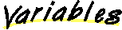

All Packages Class Hierarchy This Package Previous Next Index
All Packages Class Hierarchy This Package Previous Next Index
Class com.oroinc.net.nntp.ArticlePointer
java.lang.Object
|
+----com.oroinc.net.nntp.ArticlePointer
- public final class ArticlePointer
- extends Object
This class is a structure used to return article number and unique
id information extracted from an NNTP server reply. You will normally
want this information when issuing a STAT command, implemented by
selectArticle .
Copyright © 1997 Original Reusable Objects, Inc.
All rights reserved.
- See Also:
- NNTPClient

-
 articleId
articleId
- The unique id of the referenced article, including the enclosing
< and > symbols which are technically not part of the
identifier, but are required by all NNTP commands taking an
article id as an argument.
-
articleNumber
- The number of the referenced article.

-
 ArticlePointer()
ArticlePointer()
-

 articleNumber
articleNumber
public int articleNumber
- The number of the referenced article.
articleId
public String articleId
- The unique id of the referenced article, including the enclosing
< and > symbols which are technically not part of the
identifier, but are required by all NNTP commands taking an
article id as an argument.

 ArticlePointer
ArticlePointer
public ArticlePointer()
All Packages Class Hierarchy This Package Previous Next Index